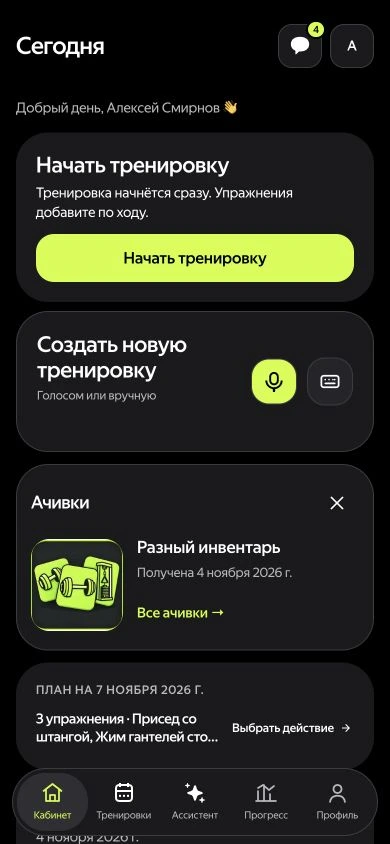
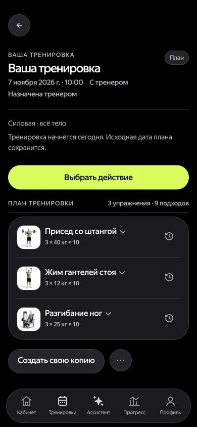
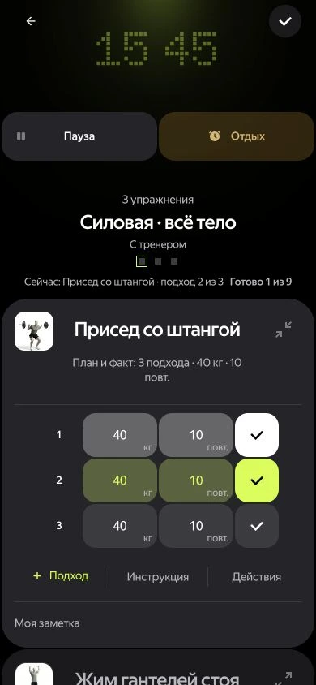
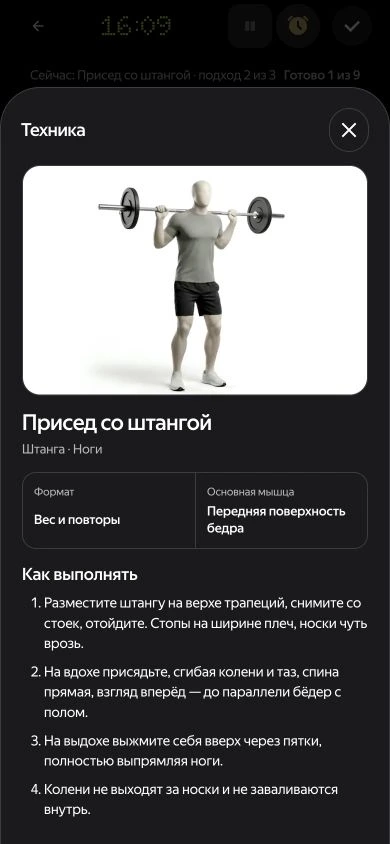
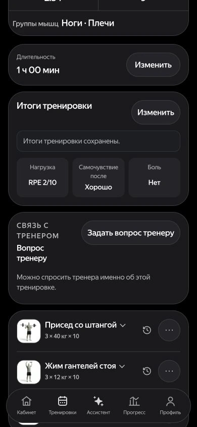

ФИТ · приложение для тренеров
Тренировки.
В системе.
Расписание, программы и результаты клиентов — в одном месте.
Открыть ФИТФИТ · приложение для тренеров
Расписание, программы и результаты клиентов — в одном месте.
Открыть ФИТ01 / Программа
Упражнения, вес и повторы.
Программа открывается из расписания.
02 / Live-тренировка
Таймер занятия, отдых и текущий подход — на одном экране.
03 / Подходы
Анимация упражнения и запись подходов прямо во время занятия.
04 / Результат
Нагрузка и результаты сохраняются.
На них можно опереться в следующий раз.
ФИТ для тренеров
Попробуйте на своей тренировке.
Попробовать ФИТЕсть вопросы? Напишите мне.
Антон Князев · команда ФИТ
Написать в Telegram antonknyazev@yandex-team.ruРеальные экраны ФИТ. Данные — пример.
ФИТ · приложение для спортсмена
Самостоятельно или с тренером.
План, запись и результаты — в одном месте.
01 / Программа
Своя программа или занятия с тренером.
Упражнения, вес и повторы уже в плане.
02 / Live-тренировка
Таймер, отдых и запись подходов
прямо во время занятия.
03 / Техника
Анимация и инструкция помогают
разобраться с техникой упражнения.
04 / Результат
Результаты остаются в истории.
Тренеру можно задать вопрос о занятии.




